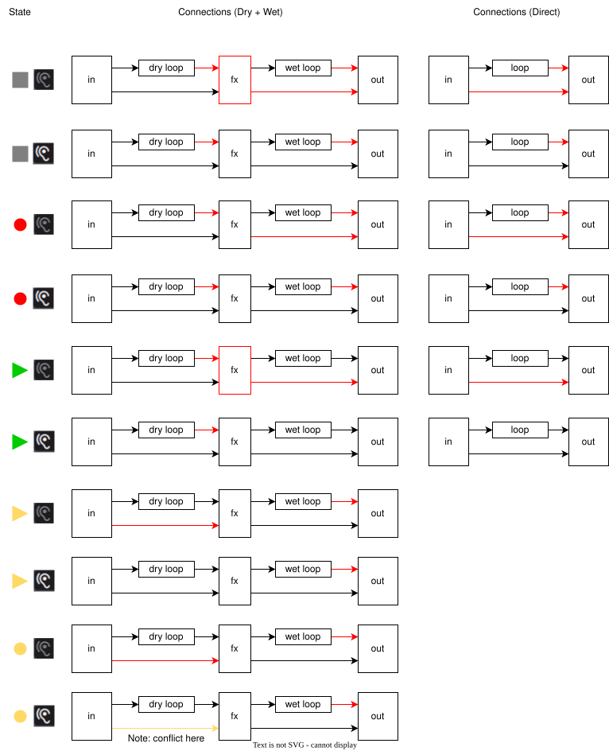

For Developers / Advanced Users¶
States And Connections¶
The basic principles of muting, monitoring, recording, playing back etc. are straightforward. However, in the case of a dry/wet combined looping setup, these principles can get confusing and/or impossible to implement perfectly, given that only a single FX processor exists.
For example, it is not possible to re-record the dry audio of multiple loops into their respective wet audio channels if they are sharing the same track (and thus the same FX processor). Their wet audio would be combined. Likewise, it is not possible to monitor the input while re-recording a loop.
Therefore some compromises have been made to select what is probably the most desirable wiring for each state of loop(s) and monitoring.
The following diagrams show the internal wiring of ShoopDaLoop’s ports and loops, including which signal paths are disabled / silent in different track/loop states.
{kind=link}

Connections in different states.¶
Lua scripting¶
Runtime and ownership¶
ShoopDaLoop embeds pinned omniLua with Lua 5.4 semantics. Native and browser builds run the same embedded host API libraries and externally packaged application scripts. Each script has an isolated state owned by the application runtime. Stopping or restarting a script removes its callbacks, timers, logical MIDI ports, connections, queued output, and script-owned dialogs.
Every script must make shoop_announce_api_version(major, minor) its first
Shoop API call. The current version is 1.4. A script runs only when its major
equals the host major and its minor is no newer than the host minor. Missing,
malformed, repeated, or incompatible announcements cancel initial execution
before versioned side effects. The global two-integer signature is independent
of modules and reserved to remain stable across future API versions. See
docs/lua_dialog_api.md for the compatibility and migration contract.
Lua API compatibility is independent of the .shoop session format version.
An incompatible source remains inspectable and exportable, but cannot be
started.
The sandbox exposes selected standard-library functions and ShoopDaLoop modules. It prevents ordinary module access and restricts file access to normalized paths in each script’s filesystem or in-memory provider, but should still be treated as a compatibility boundary for trusted local scripts, not as a hardened security boundary.
Script management¶
Open Settings → Scripts to inspect lifecycle, errors, help, activity, logs,
and MIDI diagnostics. Native builds can add, reload, and remove user script
files. Browser builds fetch the generated external built-ins catalog and manage sources bundled in sessions, without machine path actions. Both targets can load a UTF-8 .lua file from
the run-once picker or by OS drag and drop after confirmation. Run-once sources
remain restartable in memory, are independent of session replacement and
serialization, and disappear when the app closes. Loading a same-named version
stops the active version and retains both entries under unique display names.
Every listed script can be exported as its exact .lua source. A built-in,
example, user, or run-once script can be included in the session; this transfers
the current source plus supported Markdown/PNG companions to atomic session-bundle ownership. A session script can instead be converted to run once or removed from the session; converting it back reuses the in-memory bundle.
Built-ins are discovered recursively by normalized relative identity. New identities are disabled until explicitly enabled. The Scripts tab can rescan after additions, changes, removals, or a location change. Persistent changes apply after Save; runtime Stop,
Restart, and Reload do not alter the settings draft. Bundled scripts in a .shoop session are resource/hash/syntax-checked before transactional session commit and round-trip without machine paths.
Browser builds target wasm32-unknown-unknown and run the same pure-Rust
omniLua scripting manager cooperatively. Version checks, script-owned dialogs,
keyboard callbacks, session scripts, and permission-gated Web MIDI control use
the shared cross-target contracts.
MIDI rules¶
Scripts create logical input/output ports with full-name regular expressions. Discovery is hotplug-aware, queues are bounded, and positive output rates are paced without catch-up bursts. Native services use JACK or midir. Browser services use explicitly enabled Web MIDI. Per-rule endpoint and failure state is published to the Scripts tab.
Global APIs¶
shoop_announce_api_version(major, minor)Mandatory first Shoop API call. Announces the non-negative integer major and minor version for which the script was designed.
print(msg),print_debug(msg),print_error(msg),print_info(msg)Add a message at the corresponding level to the script log.
Built-in modules¶
shoop_dialogScript-owned simple and paged dialogs. Contents are ordered portable rich text and labeled buttons, and buttons may retain script callbacks. Scripts may request opening at startup or from callbacks; users retain window visibility and current-page control. Dialogs are destroyed with their owning runtime. See
docs/lua_dialog_api.mdfor constructors, style fields, examples, errors, and lifecycle behavior.shoop_controlSynchronous queries and typed mutations for loops, tracks, global controls, callbacks, timers, and logical MIDI ports. Stable
Key_*,KeyModifier_*, loop-mode, event-type, and sentinel constants are exposed for bundled and user scripts.
shoop_coords
- shoop_coords.move(coords, direction_key) -> coords
Take a single coordinates list and return coordinates if they were moved to the direction indicated by the given keyboard key.
- shoop_coords.extreme(all_coords, direction_key, highest) -> coord
Look for the highest (if highest == true) or lowest index (row/col) in the given direction
shoop_helpers
- shoop_helpers.expand_selection(direction_key)
Given a direction key, expand the current selection of loops by adding the loop(s) in the given direction.
- shoop_helpers.shrink_selection(direction_key)
Given a direction key, shrink the current selection of loops by removing loops “coming from” that direction.
- shoop_helpers.move_selection(direction_key)
Given a direction key, move the selection of loops to that direction if none of the loops would be out of bounds.
- shoop_helpers.default_loop_action(loop_selector, dry)
Perform the “default loop action” on a set of loop coordinates. The default loop action is designed to cycle intuitively from empty to recording/grabbing, playing and stopping. If “dry” is set to true, going to playback will go to playing dry through wet instead.
- shoop_helpers.record_into_first_empty(overdub)
In the track(s) of all selected loop(s) (or recording loop(s) of none selected), find the first empty loop and start recording into it. If overdub is true, already recording loops will transition to Playing. Otherwise, they will transition to Stopped.
- shoop_helpers.create_click_hold_detector(timeout_ms, on_click, on_hold_start, on_hold_stop)
Create an independent button click/hold detector. Call press() and release() on the returned value for button transitions. A release before timeout_ms calls on_click; otherwise on_hold_start is called at the timeout and on_hold_stop at release.
- shoop_helpers.toggle_solo()
Toggle the global “solo” control
- shoop_helpers.toggle_sync_active()
Toggle the global “sync active” control
- shoop_helpers.toggle_play_after_record()
Toggle the global “sync active” control
- shoop_helpers.track_toggle_muted(index)
Toggle the muted state of the given track. -1 is the sync track.
- shoop_helpers.track_toggle_input_muted(selector, respect_auto_mute)
Toggle input mutedness for the selected tracks as a group. -1 is the sync track. When respect_auto_mute is true, unmuting respects the global auto-mute control.
- shoop_helpers.start_sampler(loops)
Start “sampler mode” on the given loops. This just means to transition them to recording (if empty) or playing (if non-empty) immediately, without regard for sync with other loops. They will immediately exit the mode when stop_sampler() is called.
- shoop_helpers.stop_sampler()
Stop “sampler mode”. This means that any loop which was started with “start_sampler(…)” will immediately stop.
shoop_format
- shoop_format.format_table(table, recursive) -> string
Format a table such that all elements can be inspected.
Software design¶
Architecture¶
ShoopDaLoop is a Rust workspace with one application composition root:
shoopdaloop.
shoop_eguiPresentation widgets consume immutable API snapshots and emit typed intents. It does not own audio drivers or session persistence.
shoop_app_apiandshoop_appStable application values plus the actor/cooperative runtime that validates intents, owns model state, and publishes revisions.
shoop_backendandshoop_engineBackend adaptation, native JACK/CPAL+midir/dummy drivers, graph scheduling, realtime audio/MIDI processing, processors, and bounded state publication. Native driver composition uses
shoop_engine/app_backend; the browser uses a dedicated AudioWorklet protocol.shoop_sessionandshoop_settingsVersioned session/media codecs, deterministic resampling, typed settings, native atomic storage, and browser storage values.
shoop_scriptingThe omniLua runtime, control API, provider-backed resources, callbacks/timers, and logical MIDI service.
shoop_audio_protocolandshoop_audio_workletBounded browser control/audio/MIDI messages and the realtime Web Audio engine.
Realtime ownership¶
Timing-authoritative state machines run in the engine. UI refreshes only observe published state. Topology and content replacements are prepared off the audio thread and committed through bounded callback-boundary operations. Realtime allocation and lock guards cover engine and AudioWorklet paths.
Carla hosting¶
Carla processors implement one frontend-independent processor contract. A
pinned libcarla_native-plugin is loaded by absolute path and Rack/Patchbay
descriptors are instantiated through CarlaNative.h; ShoopDaLoop does not
host Carla through LV2 or another plugin wrapper. In-process hosting owns Carla
on a non-realtime bridge thread. Subprocess mode gives each chain an
authenticated worker generation and bounded shared-memory block transport. The
same executable dispatches hidden worker mode before creating the GUI.
Build and packaging¶
Cargo builds the native workspace. Trunk builds the browser UI and dedicated AudioWorklet with matching profiles. The application artifact script emits unsigned native archives, a complete hosted web archive, and a core-only HTML file. Native archives include a manifest- and checksum-verified Carla runtime component with UI/discovery/bridge helpers, licenses, and corresponding-source metadata. Native and hosted-web archives include the external built-ins tree; the core-only HTML explicitly does not. Browser artifacts contain no Carla component.
Testing¶
The main gates are:
cargo fmt --all -- --check
RUSTFLAGS="-D warnings" cargo build --workspace
SHOOP_ALLOW_MISSING_BACKENDS=1 \
cargo nextest run --workspace --features shoop_engine/app_backend --profile ci
python3 scripts/check_tracing_coverage.py --require-closed
Web verification additionally builds both Wasm packages, checks browser dependency isolation, verifies hosted/self-contained artifacts, and runs Chrome and Firefox workflows where available. The GitHub workflow is authoritative for Linux, Windows, macOS, and browser release surfaces.
Tracy profiling and capture¶
The native application exposes Rust tracing data to Tracy 0.13.1.
Modes¶
- Disabled
Omit tracing options. Gated helpers avoid Tracy calls.
- Coarse
Use
--tracingto capture in process. This includes GUI/application spans, engine control/graph work, and bounded callback/session categories. There is no live TCP profiler mode or external capture executable.- Engine detail
Add
--tracing-engine-detailfor per-stage realtime zones. This increases callback overhead and capture size.
Capture a file:
cargo run -p shoopdaloop -- \
--tracing \
--tracing-engine-detail
Quit normally so application and engine workers quiesce and capture shutdown
atomically publishes the numbered .tracy file below traces/. Require a
non-empty capture, no corresponding .partial file, and a successful Tracy
parser check before analysis. Abort, fatal signals, forced termination, OOM,
and power loss cannot finalize an in-process trace.
Trace structure¶
frontend.egui.*GUI initialization, updates, rendering, settings actions, and intent creation.
frontend.app.*Intent dispatch/handling/application, backend advancement, snapshot application/publication, and runtime lifecycle.
intent_idcorrelates submission with actor-side handling.engine.control.*andengine.graph.*Bounded commands, waits, topology construction, scheduling, and graph apply.
engine.rt.*Driver/callback/cycle/session hierarchy. Detail mode adds fixed port, channel, composite, MIDI, routing, and processor stages.
worker.*andengine.plugin.*Background application/graph/plugin work and native processor operations.
Tracing is diagnostic instrumentation, not a transparent realtime measurement. Tracy may allocate or lock internally and can change callback timing or cause xruns. Start with coarse mode, enable detail only when needed, and compare like capture modes.
The repository Tracy skill at .agents/skills/tracy/SKILL.md documents the
ShoopDaLoop-specific query and interpretation workflow.
Rust tracing coverage inventory¶
docs/tracing_coverage.csv accounts for every production Rust module in the
retained workspace. Cargo integration tests and example/benchmark binaries are
validation tools and are intentionally outside the production inventory.
Classifications¶
instrumented_directThe module contains gated tracing at a meaningful runtime boundary.
instrumented_indirectThe module executes inside a named application, UI, engine, worklet, or persistence boundary; another span would duplicate the owning operation.
excludedBuild-time or logging-declaration code for which runtime instrumentation does not apply or would recurse.
planned_direct and planned_indirect are temporary classifications. The
final check rejects them.
Validation¶
Run during source changes:
python3 scripts/check_tracing_coverage.py
The merge gate requires a closed inventory:
python3 scripts/check_tracing_coverage.py --require-closed
The verifier compares exact tracked Rust module paths, rejects duplicate or stale rows, requires a context and rationale, validates classifications, and in closed mode rejects planned rows. Instrumentation behavior is additionally covered by tracing gates, realtime allocation tests, native capture lifecycle tests, and manual capture/parser checks; inventory completeness alone is not a performance or realtime-safety proof.